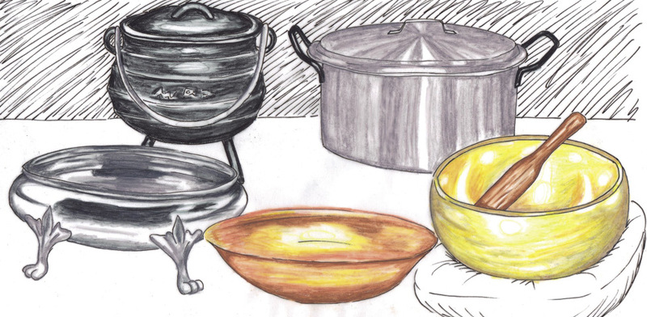
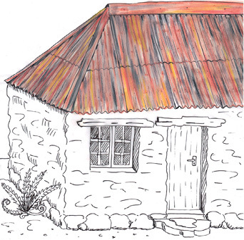

<div class="container">
  <div id="contents" class="col-md-12 main-content"><h1 xmlns="http://www.w3.org/1999/xhtml" id="toc-id-4">Investigation: metals and magnetism</h1>


    <p xmlns="http://www.w3.org/1999/xhtml" class="x--Body-opener">In Chapter 1 you learnt about magnets
    and magnetism. Now you will investigate which metals are
    attracted to magnets and which are not. You will also learn why
    it is good to recycle scrap metal and how this important work
    is done.</p>

    <p xmlns="http://www.w3.org/1999/xhtml" class="x--Body-opener">We can also recycle materials other
    than metal. Plastic, paper, cardboard and other materials that
    are often thrown away could be recycled instead. Since we are
    running out of basic resources, we need to reuse or recycle as
    much as we can instead of simply throwing things away.</p>

    <p xmlns="http://www.w3.org/1999/xhtml" class="x--Body-opener">You will start work on a recycling
    plan for your school by recording the waste produced by your
    school and how much of it could have been recycled. Many
    factories use waste materials, so you can develop a plan to
    raise funds for your school by recycling waste.</p>

     <figure xmlns="http://www.w3.org/1999/xhtml">

    <p class="x--Body-opener"><span></span> </p>
<figcaption>
    <p class="x--caption">Figure 1: Metals used in the home</p>
</figcaption></figure><figure xmlns="http://www.w3.org/1999/xhtml">
    <p class="x--Body-Text"><span></span> </p>

    <p class="x--Body-Text"><span></span> </p>
<figcaption>
    <p class="x--caption para-style-override-13">Figure 2</p>
</figcaption></figure><figure xmlns="http://www.w3.org/1999/xhtml">
    <p class="x--Body-Text"><span></span> </p>

    
    <span></span><figcaption><p>Figure 3</p></figcaption></figure>

    <h2 xmlns="http://www.w3.org/1999/xhtml" id="toc-id-5">Magnetic and non-magnetic materials</h2>

    <p xmlns="http://www.w3.org/1999/xhtml" class="x--Body-Text">You learnt about magnetism and magnets
    in Chapter 1. You learnt that non-metals do not stick to
    magnets, while other metals do stick to magnets. We say that
    these metals are magnetic.</p>

    <p xmlns="http://www.w3.org/1999/xhtml" class="x--Body-indent para-style-override-4">Look at the
    objects made of different metals in Figure 4:</p>

    <figure xmlns="http://www.w3.org/1999/xhtml">
            <p class="x--Body-indent"><span></span> </p>
<figcaption>
        <p class="x--caption">Figure 4: Some different
    <span>types</span> of metal</p>
</figcaption></figure>
    <p xmlns="http://www.w3.org/1999/xhtml" class="x--Body-investigation-hanging para-style-override-10">1. Which
    of the objects are made of magnetic metals? Fill in the table
    below:</p>

    <table xmlns="http://www.w3.org/1999/xhtml" id="table-10" class="No-Table-Style"><tbody><tr class="Row-Column-7"><td class="cell-style-override-1" rowspan="2">
            <p class="x--Body-Text para-style-override-2">
            <b>Material</b></p>
          </td>

          <td class="cell-style-override-1" colspan="2">
            <p class="x--Body-Text para-style-override-2"><b>Is the
            material magnetic?</b></p>
          </td>
        </tr><tr class="Row-Column-7"><td class="cell-style-override-1">
            <p class="x--Body-Text para-style-override-15"><b>Yes</b></p>
          </td>

          <td class="cell-style-override-1">
            <p class="x--Body-Text para-style-override-15"><b>No</b></p>
          </td>
        </tr><tr class="Row-Column-57"><td class="cell-style-override-6">
            <p class="x--Body-Text">Steel pylon</p>
          </td>

          <td class="cell-style-override-6">
             
          </td>

          <td class="cell-style-override-6"/>
        </tr><tr class="Row-Column-57"><td class="cell-style-override-6">
            <p class="x--Body-Text">Cast-iron pot</p>
          </td>

          <td class="cell-style-override-6">
             
          </td>

          <td class="cell-style-override-6"/>
        </tr><tr class="Row-Column-57"><td class="cell-style-override-6">
            <p class="x--Body-Text">Silver trumpet</p>
          </td>

          <td class="cell-style-override-6"/>

          <td class="cell-style-override-6">
            
          </td>
        </tr><tr class="Row-Column-57"><td class="cell-style-override-6">
            <p class="x--Body-Text">Copper beading</p>
          </td>

          <td class="cell-style-override-6"/>

          <td class="cell-style-override-6">
            
          </td>
        </tr><tr class="Row-Column-57"><td class="cell-style-override-6">
            <p class="x--Body-Text">Brass horn</p>
          </td>

          <td class="cell-style-override-6"/>

          <td class="cell-style-override-6">
             
          </td>
        </tr><tr class="Row-Column-57"><td class="cell-style-override-6">
            <p class="x--Body-Text">Lead solder</p>
          </td>

          <td class="cell-style-override-6"/>

          <td class="cell-style-override-6">
             
          </td>
        </tr><tr class="Row-Column-57"><td class="cell-style-override-6">
            <p class="x--Body-Text">Gold earrings</p>
          </td>

          <td class="cell-style-override-6"/>

          <td class="cell-style-override-6">
            
          </td>
        </tr><tr class="Row-Column-57"><td class="cell-style-override-6">
            <p class="x--Body-Text">Nickel fittings</p>
          </td>

          <td class="cell-style-override-6">
             
          </td>

          <td class="cell-style-override-6"/>
        </tr><tr class="Row-Column-57"><td class="cell-style-override-6">
            <p class="x--Body-Text">Steel cable</p>
          </td>

          <td class="cell-style-override-6">
            
          </td>

          <td class="cell-style-override-6"/>
        </tr><tr class="Row-Column-57"><td class="cell-style-override-6">
            <p class="x--Body-Text">Aluminium computer parts</p>
          </td>

          <td class="cell-style-override-6">
            
          </td>

          <td class="cell-style-override-6"/>
        </tr><tr class="Row-Column-57"><td class="cell-style-override-6">
            <p class="x--Body-Text">Bronze pot</p>
          </td>

          <td class="cell-style-override-6"/>

          <td class="cell-style-override-6">
             
          </td>
        </tr><tr class="Row-Column-57"><td class="cell-style-override-6">
            <p class="x--Body-Text">Tin can</p>
          </td>

          <td class="cell-style-override-6"/>

          <td class="cell-style-override-6">
             
          </td>
        </tr><tr class="Row-Column-57"><td class="cell-style-override-6">
            <p class="x--Body-Text">Keys</p>
          </td>

          <td class="cell-style-override-6"/>

          <td class="cell-style-override-6">
             
          </td>
        </tr></tbody></table><p xmlns="http://www.w3.org/1999/xhtml" class="x--Body-indent">How many of the metals are magnetic?
    If you said only three, then you are correct. They are steel,
    iron and nickel, and they all contain iron and are magnetic.
    Any metal containing iron and that is magnetic, is called a
    <span class="char-style-override-4"><b>ferrous metal</b></span>.</p>

    <p xmlns="http://www.w3.org/1999/xhtml" class="x--Body-indent-1-3">Many people think that tin is
    magnetic, but it is not. The tins that you buy food and other
    household goods in are actually made of very thin steel and are
    covered with another thin layer of tin to stop them from
    corroding. Steel is a mixture of iron and carbon. When you
    place a magnet next to a tin can, it is attracted to the iron
    in the steel, not the tin.</p>

    <div xmlns="http://www.w3.org/1999/xhtml" class="aside">
      <p class="x--Body-box-no-indent"><b>Ferrous</b> metals are metals that
      contain iron.</p>
    </div>

    <p xmlns="http://www.w3.org/1999/xhtml" class="x--Body-indent-1-3">Often, you will see iron that has
    rusted. This is called corrosion. Rusty iron is still
    magnetic.</p>

    <div xmlns="http://www.w3.org/1999/xhtml" class="aside">
      <p class="x--Body-box-no-indent">When a metal is in contact
      with oxygen, it forms rust over time.</p>

      <p class="x--Body-box-no-indent">Rust is also magnetic.</p>

      <p class="x--Body-box-no-indent">Tin and zinc don't rust, so
      we use them to protect iron and steel.</p>
    </div>
<figure xmlns="http://www.w3.org/1999/xhtml">
    <p class="x--caption"><span></span> </p>
<figcaption>
    <p class="x--caption">Figure 5: The coating of zinc has wornoff
    this corrugated steel roof.</p>
</figcaption></figure>
    <h3 xmlns="http://www.w3.org/1999/xhtml">Investigation: test which metals are magnetic</h3>

    <h4 xmlns="http://www.w3.org/1999/xhtml">Common metal
    objects</h4>

    <p xmlns="http://www.w3.org/1999/xhtml" class="x--Body-indent">In your daily life you see many
    useful metal objects around you. Some are very big, such as
    cars and <span>buses. Some</span> are very small, such as
    paperclips.</p>

    <p xmlns="http://www.w3.org/1999/xhtml" class="x--Body-investigation-hanging--1-3- para-style-override-16">1.
    In the first column, list 15 metal items that you use or often
    see around you.</p>

    <p xmlns="http://www.w3.org/1999/xhtml" class="x--Body-investigation-hanging--1-3- para-style-override-16">2.
    In the second column, write down what metal each object is made
    of. If an object consists of more than one metal, write down
    which metal makes up the biggest part. For example: cars are
    mainly made of steel.</p>

    <p xmlns="http://www.w3.org/1999/xhtml" class="x--Body-investigation-hanging--1-3- para-style-override-16">3.
    Test the items to see whether they are magnetic or not. Write
    down your results in the last column.</p>

    <figure xmlns="http://www.w3.org/1999/xhtml">
      <div class="frame-4"></div>

      <figcaption>
        <p class="x--caption">Figure 6: Things you find around the
        house: a fork, a strainer, needles and screws.</p>
      </figcaption>
    </figure>

    <table xmlns="http://www.w3.org/1999/xhtml" id="table-11" class="No-Table-Style"><tbody><tr class="Row-Column-7"><td class="cell-style-override-1">
            <p class="x--Body-Text para-style-override-2">
            <b>Object</b></p>
          </td>

          <td class="cell-style-override-1">
            <p class="x--Body-Text para-style-override-2"><b>Metal</b></p>
          </td>

          <td class="cell-style-override-1">
            <p class="x--Body-Text para-style-override-2"><b>Magnetic:
            Yes/No</b></p>
          </td>
        </tr><tr class="Row-Column-7"><td class="cell-style-override-1">
             
          </td>

          <td class="cell-style-override-1">
             
          </td>

          <td class="cell-style-override-1">
            
          </td>
        </tr><tr class="Row-Column-7"><td class="cell-style-override-1">
             
          </td>

          <td class="cell-style-override-1">
             
          </td>

          <td class="cell-style-override-1">
             
          </td>
        </tr><tr class="Row-Column-7"><td class="cell-style-override-1">
             
          </td>

          <td class="cell-style-override-1">
             
          </td>

          <td class="cell-style-override-1">
            
          </td>
        </tr><tr class="Row-Column-7"><td class="cell-style-override-1">
             
          </td>

          <td class="cell-style-override-1">
            
          </td>

          <td class="cell-style-override-1">
             
          </td>
        </tr><tr class="Row-Column-7"><td class="cell-style-override-1">
             
          </td>

          <td class="cell-style-override-1">
             
          </td>

          <td class="cell-style-override-1">
            
          </td>
        </tr><tr class="Row-Column-7"><td class="cell-style-override-1">
            
          </td>

          <td class="cell-style-override-1">
             
          </td>

          <td class="cell-style-override-1">
             
          </td>
        </tr><tr class="Row-Column-7"><td class="cell-style-override-1">
            
          </td>

          <td class="cell-style-override-1">
             
          </td>

          <td class="cell-style-override-1">
             
          </td>
        </tr><tr class="Row-Column-7"><td class="cell-style-override-1">
             
          </td>

          <td class="cell-style-override-1">
             </td> 

          <td class="cell-style-override-1">
             
          </td>
        </tr></tbody></table> 
    <h2 xmlns="http://www.w3.org/1999/xhtml" id="toc-id-6">Case study: recycling scrap metals</h2>

    <p xmlns="http://www.w3.org/1999/xhtml" class="x--Body-text-1-3">Are you surprised that so many
    things we use every day are made of metal? We use different
    metals to help us with almost everything we do. This means that
    factories need a constant supply of metal so that they can keep
    manufacturing all these items. We use millions of tons of
    steel, aluminium and other metals every year. But the earth's
    supply of metal will eventually run out. Can you think of the
    problems this will lead to?</p>

    <div xmlns="http://www.w3.org/1999/xhtml" class="aside">
      <p class="x--Body-box-no-indent"><span class="char-style-override-1"><b>Recycling</b></span> is to use something
      over and over again. It may be in a different form, but we
      use the basic materials again and again.</p>
    </div>

    <p xmlns="http://www.w3.org/1999/xhtml" class="x--Body-indent-1-3 para-style-override-17">The answer
    is to <span class="char-style-override-4"><b>recycle</b></span> the
    scrap metal. Everything that is made of metal can be broken up
    and sorted into its basic parts and used again. This will help
    to save the country millions of <span>rand</span> each year and
    will also stop us from using up all the planet's resources.</p>

    <p xmlns="http://www.w3.org/1999/xhtml" class="x--Body-indent-1-3 para-style-override-17">Metal is
    ideal for recycling as it can be melted down and reused without
    losing its strength.</p>

    <figure xmlns="http://www.w3.org/1999/xhtml">
      <div class="frame-4"></div>

      <figcaption>
        <p class="x--caption">Figure 7: Steel recycling bales</p>
      </figcaption>
    </figure>

    <h4 xmlns="http://www.w3.org/1999/xhtml">Collecting
    scrap metal</h4>

    <p xmlns="http://www.w3.org/1999/xhtml" class="x--Body-indent-1-3 para-style-override-18">The
    process of collecting scrap metal for recycling starts when
    people learn to notthrow metal objects away. Everything made of
    metal can be recycled and everyone has to make sure that
    nothing that can be reused is thrown away.</p>

    <p xmlns="http://www.w3.org/1999/xhtml" class="x--Body-indent-1-3 para-style-override-18">At home,
    make sure that all small metal objects, such as empty tins, are
    collected separately and sent to recycling centres. Bigger
    objects such as old household appliances will be collected by
    scrap metal dealers. Scrap metal dealers sort the different
    types of metals they collect into piles and send these to the
    factories. The factories then melt down the metal objects so
    that <span>the metal</span> can be used again.</p>

    <figure xmlns="http://www.w3.org/1999/xhtml">
      <div class="frame-4"></div>

      <figcaption>
        <p class="x--caption">Figure 8: The international recycling
        symbol. When you see this sign, it means that the materials
        used to make the product can be recycled.</p>
      </figcaption>
    </figure>
<figure xmlns="http://www.w3.org/1999/xhtml">
    <p class="x--caption"><span></span> </p>
<figcaption>
    <p class="x--caption">Figure 9: Scrap metal yards use magnets
    to sort piles of scrap metal.</p>
</figcaption></figure>
    <p xmlns="http://www.w3.org/1999/xhtml" class="x--Body-indent">Can you see how a magnet can be used
    to help sort piles of metal? Scrap dealers use large magnets to
    pull out the magnetic metals from the piles. This speeds up the
    process.</p>

    <p xmlns="http://www.w3.org/1999/xhtml" class="x--Body--above"><b>Making money
    from recycling</b></p>

    <p xmlns="http://www.w3.org/1999/xhtml" class="x--Body-indent">To encourage people not to waste
    valuable materials that can be recycled, scrap metal dealers
    will pay for scrap metal. They usually pay by mass, so it
    doesn't really matter what shape or form the metal comes in, it
    is the mass that counts.</p>

    <p xmlns="http://www.w3.org/1999/xhtml" class="x--Body-indent">But this can create problems too.
    Some people steal metal objects such as steel manhole covers
    and copper wire from telephone and electricity cables, to try
    and make money. Stealing these articles is not only dishonest,
    but it also puts other people in danger. If manhole covers are
    stolen, then there are holes in the roads that people can drive
    or fall <span>into. Stolen electricity cables can cause loss of
    power.</span></p>

    <h3 xmlns="http://www.w3.org/1999/xhtml">Collecting scrap metal honestly</h3>

    <p xmlns="http://www.w3.org/1999/xhtml" class="x--Body-investigation-hanging para-style-override-9">
    1. Do you think there are metal items that scrap metal dealers
    should not accept from people trying to sell them? Discuss your
    ideas with another learner. Write down the items you think
    scrap metal dealers should not buy.</p>
     <hr xmlns="http://www.w3.org/1999/xhtml"/><p xmlns="http://www.w3.org/1999/xhtml" class="x--Body-investigation-hanging para-style-override-9">
    2. <span>List a few scrap metal objects that people can collect
    to sell to scrap metal dealers.</span></p>
     <hr xmlns="http://www.w3.org/1999/xhtml"/><p xmlns="http://www.w3.org/1999/xhtml" class="x--Body-investigation-hanging">3. If you were
    collecting scrap metal to sell to a scrap metal dealer, how
    would you show that you had gathered the items legally? Here is
    an example: "I would get the owner of the house to give me a
    letter saying that she gave me the items."</p>

    <p xmlns="http://www.w3.org/1999/xhtml" class="x--Body-indent para-style-override-19">Write down any
    other steps you could take.</p>
     <hr xmlns="http://www.w3.org/1999/xhtml"/> 
    <h4 xmlns="http://www.w3.org/1999/xhtml">Identifying
    recyclable materials</h4>
    <p xmlns="http://www.w3.org/1999/xhtml" class="x--Body-indent">Scrap metal is not the only
    recyclable material. Most waste can be recycled. There are
    companies that specialise in collecting all forms of recyclable
    waste, and this serves the community in many ways.</p>

    <p xmlns="http://www.w3.org/1999/xhtml" class="x--Body-indent">In the last section of this chapter,
    you are going to investigate what a recycling scheme for your
    school will achieve. Before you start collecting materials,
    discuss in the class which waste materials the school produces
    could be recycled. Remember that it is not only your classroom,
    but the whole school.</p>

    <p xmlns="http://www.w3.org/1999/xhtml" class="x--Body-indent">Get one learner to write these items
    on the <span>board</span>, with a few examples of the materials
    you are likely to find at school.</p>

    <p xmlns="http://www.w3.org/1999/xhtml" class="x--Body-indent"><b>For example</b>:</p>

    <p xmlns="http://www.w3.org/1999/xhtml" class="x--Body-indent"><b>Plastic:</b> milk bottles, cold
    drink bottles.</p>

    <p xmlns="http://www.w3.org/1999/xhtml" class="x--Body-indent"><b>Cardboard:</b> food cartons,
    boxes.</p>

  <h4 xmlns="http://www.w3.org/1999/xhtml">How much
    recyclable waste is produced by the school?</h4>

    <ul xmlns="http://www.w3.org/1999/xhtml"><li class="x--Body-text-bullet">  For the
      next week, keep a record of the amount of waste that the
      school produces.</li>

      <li class="x--Body-text-bullet para-style-override-20">
          It would
        be helpful if the rest of the school knows that you are
        collecting recyclable waste. Ask your principal if you can
        have a special waste bin or small area where
        <span>learners</span> can bring their recyclable waste. If
        your school has extra waste bins, you could put them next
        to the normal bins and put recycling labels on them.

      
      </li>

      <li class="x--Body-text-bullet">  Collect
      the recyclable material and sort it into piles. Put this
      recyclable material into black bags. Tie each bag when it is
      full and mark them clearly. Get advice from your teacher on
      where to store the material while you are collecting it.</li>

      <li class="x--Body-text-bullet">  Find out
      if there are scrap dealers near you or your school who will
      collect the waste, and ask them how much they will pay for
      the various types of material.</li>
    </ul>  <div xmlns="http://www.w3.org/1999/xhtml" class="aside">
          <p class="x--Body-box-heading"><b>Safety</b></p>

          <p class="x--Body-box-no-indent">When you are collecting
          waste materials, always wear gloves. Wash your hands
          thoroughly after you have finished sorting the
          material.</p>
        </div>
        <h2 xmlns="http://www.w3.org/1999/xhtml" id="toc-id-7">Recycling plan for your school</h2>

    <h4 xmlns="http://www.w3.org/1999/xhtml">Making money from
    recycling</h4>

    <p xmlns="http://www.w3.org/1999/xhtml" class="x--Body-indent">You have been collecting and storing
    recyclable waste for one week. Now do the following exercises
    as a class:</p>

    <ul xmlns="http://www.w3.org/1999/xhtml"><li class="x--Body-text-bullet">  Gather all
      the waste you have collected and make sure it is correctly
      sorted: one pile for paper, one pile for cardboard, one pile
      for plastic.</li>

      <li class="x--Body-text-bullet">  Place the
      piles into bags and mark them carefully according to what is
      in the bag.</li>

      <li class="x--Body-text-bullet">  Weigh the
      various types of material. Work out the total amount of each
      material that you have.</li>

      <li class="x--Body-text-bullet">  Multiply
      the weight of the material by the value the scrap dealer said
      <span>he or she</span> would pay for that material.
      <p><b>For example:</b></p><p>3 kg aluminium
      tins at R3,50 per kg: R3,50 × 3 = R10,50</p></li>

      <li class="x--Body-text-bullet">  Total all
      the amounts for all of the materials.</li>

      <li class="x--Body-text-bullet">  Discuss
      ways you could improve the collecting system.</li>

      <li class="x--Body-text-bullet">  Discuss
      ways to make sure the whole school is involved and interested
      in this project.</li>
    </ul><h4 xmlns="http://www.w3.org/1999/xhtml">Write an
    individual report on the value of recycling for your
    school</h4>

    <p xmlns="http://www.w3.org/1999/xhtml" class="x--Body-indent">You have worked as a class to see how
    much recyclable material can be collected over a week from the
    school, and how much money could be made for school projects.
    Each of you must now write a report on the process.</p>

    <p xmlns="http://www.w3.org/1999/xhtml" class="x--Body--above">You need to include the following
    topics:</p>

    <p xmlns="http://www.w3.org/1999/xhtml" class="x--Body-investigation-hanging">1. Which materials
    could the school recycle?</p>

    <p xmlns="http://www.w3.org/1999/xhtml" class="x--Body-investigation-hanging">2. What amounts of
    each material could be collected each week on average?</p>

    <p xmlns="http://www.w3.org/1999/xhtml" class="x--Body-investigation-hanging">3. Who will collect
    the waste each day?</p>

    <p xmlns="http://www.w3.org/1999/xhtml" class="x--Body-investigation-hanging">4. Where will you
    store the waste material safely and hygienically?</p>

    <p xmlns="http://www.w3.org/1999/xhtml" class="x--Body-investigation-hanging">5. What scrap dealer
    or recycling company will collect the material, and how much
    will they pay for it?</p>

    <p xmlns="http://www.w3.org/1999/xhtml" class="x--Body-investigation-hanging">6. Should you bring
    extra material from home or other collection points to add to
    the piles each week to make more money?</p>

    <p xmlns="http://www.w3.org/1999/xhtml" class="x--Body-investigation-hanging">7. Should you involve
    the whole school in the project?</p>

    <p xmlns="http://www.w3.org/1999/xhtml" class="x--Body-investigation-hanging">8. Write down new
    ideas about how to make the process of recycling more efficient
    while raising extra money.</p>
     <hr xmlns="http://www.w3.org/1999/xhtml"/><h3 xmlns="http://www.w3.org/1999/xhtml">Next week</h3>

    <p xmlns="http://www.w3.org/1999/xhtml" class="x--Body-Text">In the next lesson, you will learn
    about simple electrical circuits, how to draw circuit diagrams,
    and how to make an electromagnet.</p>

    
    
  </div>
</div>